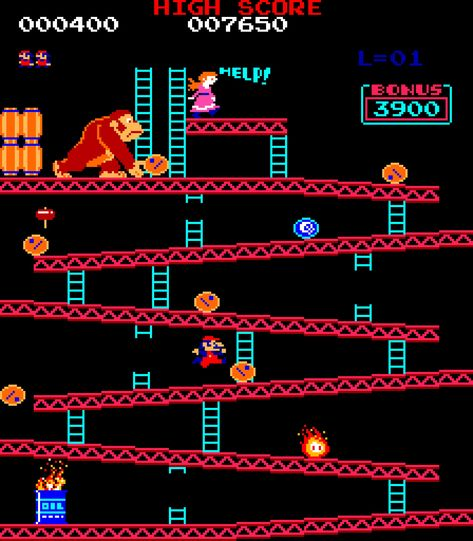

Pac-Man
Desarrollado por Toru Iwatani de Namco, Pac-Man se convirtió en un fenómeno mundial por su temática única y humorística, atrayendo a hombres y mujeres de todas las edades. El objetivo es comer todos los puntos en un laberinto mientras se evitan fantasmas.
Donkey Kong
Creado por Alexey Pajitnov en la Unión Soviética, Tetris es uno de los videojuegos de puzzle más influyentes de todos los tiempos. Los jugadores deben encajar bloques de diferentes formas para formar líneas completas sin dejar huecos.
Frogger
Desarrollado por Shigeru Miyamoto y Takashi Tezuka de Nintendo, Super Mario Bros revolucionó el género de plataformas y estableció a Mario como uno de los personajes más icónicos de la historia de los videojuegos. El jugador controla a Mario a través del Reino Champiñón para rescatar a la Princesa Peach.
Super Mario World
Creado por Shigeru Miyamoto, este juego introdujo elementos de aventura y exploración, convirtiéndose en un pilar del género RPG. El jugador controla a Mario en una misión para rescatar a la Princesa Zelda y derrotar a Ganon.
Sonic the Hedgehog
Desarrollado por Tomohiro Nishikado de Taito, Space Invaders popularizó el género "shoot 'em up" y tuvo un impacto significativo en la industria de los videojuegos. El jugador controla una nave espacial y debe destruir oleadas de extraterrestres.
Pokémon Red y Blue

Desarrollado por Tomohiro Nishikado de Taito, Space Invaders popularizó el género "shoot 'em up" y tuvo un impacto significativo en la industria de los videojuegos. El jugador controla una nave espacial y debe destruir oleadas de extraterrestres.